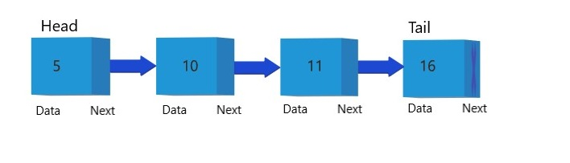
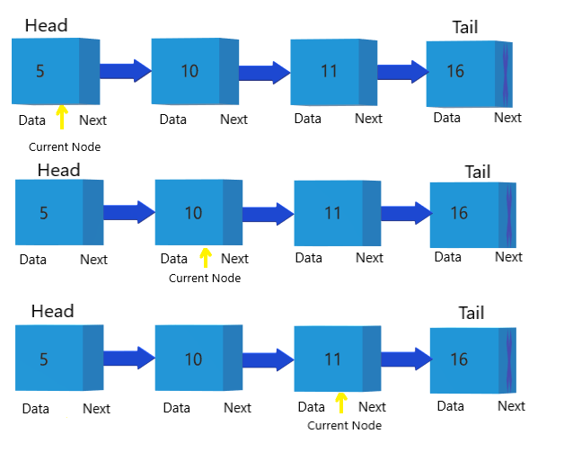
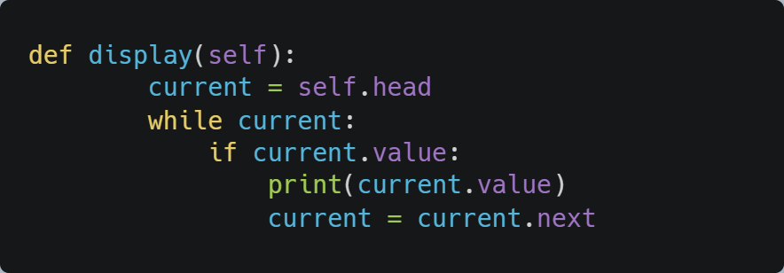
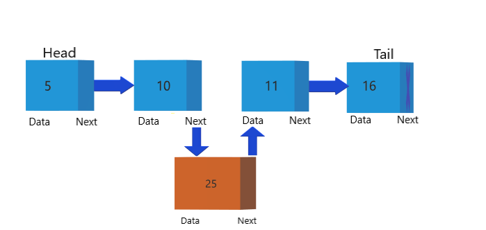
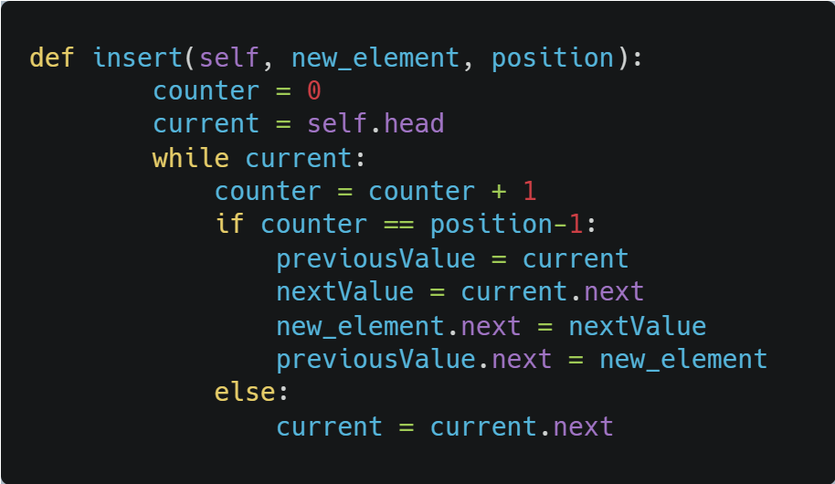

Linked List
Part 2 : A Deep Dive into Linked List
Topics Covered
- - Displaying all the Elements
- - Inserting an Element
- - Remove an Element
- - Reversing the Linked List
Displaying all the Elements
In our earlier example I have shown how to traverse and append nodes at the end. Let's see how to traverse and display all the elements in the linked list

Algorithm
- Created a class Element and LinkedList. Element has two attributes value and next, next stores the pointer to the next element.
- We append the nodes at the end of the Linked List by the append() method.
- The display() method initially points current node to the head of the list
- Traverse through the list till the current points to null
- Display each node value

Inserting an Element

The append() funtion inserts a new node after a certain node is found. The time complexity to append a new node is O(n) where n = number of nodes in the Linked List.
Algorithm
- We have a insert after a certain node. So we traverse the linked list
- Check if the previous node exists and then create a new Node.
- Make new Node as next of the previous node.
- Make the next node value as the next of the new Node
- Display each node value
